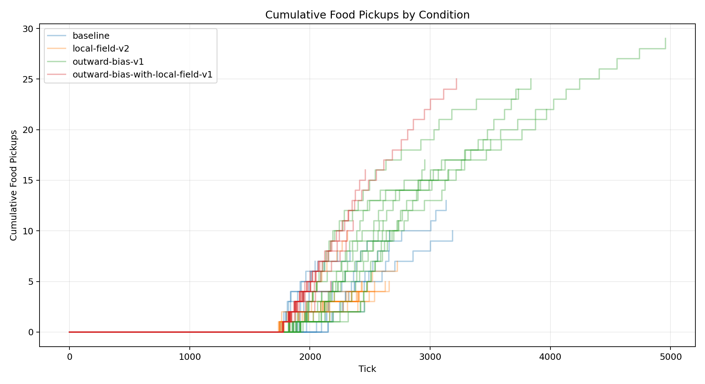
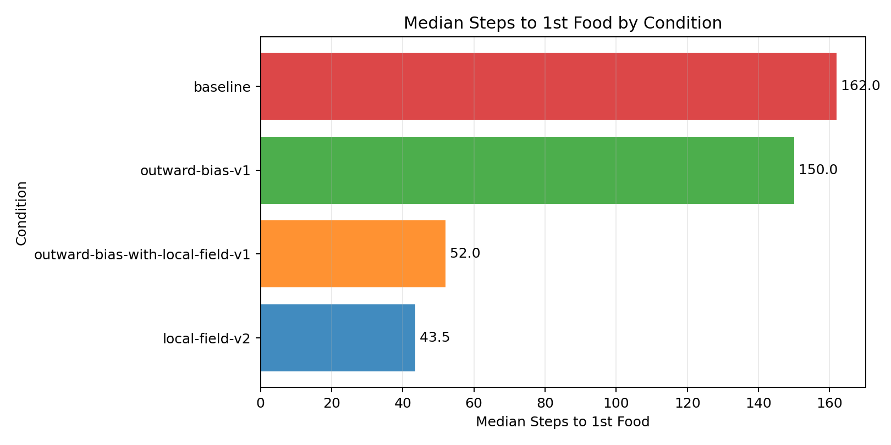
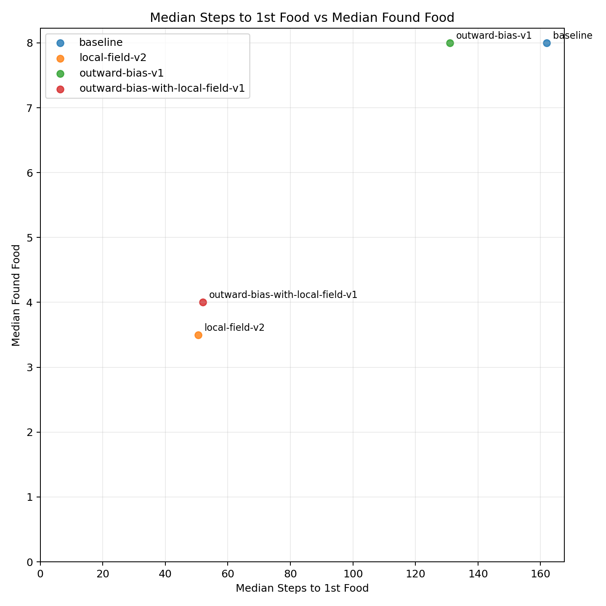
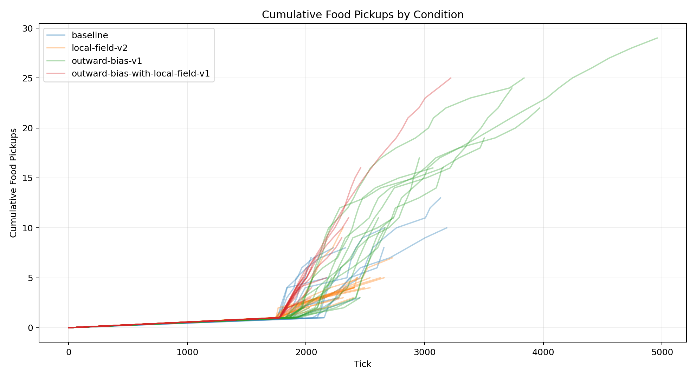
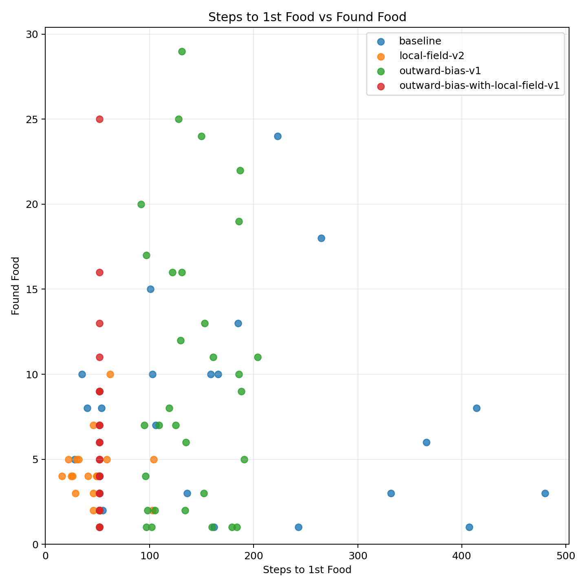

| Condition | Runs |
|---|---|
| baseline | 31 |
| local-field-v2 | 31 |
| outward-bias-v1 | 31 |
| outward-bias-with-local-field-v1 | 30 |
| Metric | Conditions | Min | Max | Average | Median | Mode |
|---|---|---|---|---|---|---|
| analysis.delivered_food | 4 | 2.968 | 10 | 6.031 | 5.579 | none |
| analysis.delivered_food_per_day | 4 | 0.110 | 0.283 | 0.189 | 0.182 | none |
| analysis.final_day | 4 | 25.839 | 31.581 | 28.147 | 27.583 | none |
| analysis.final_tick | 4 | 2528.516 | 3101.677 | 2756.762 | 2698.427 | none |
| analysis.found_food | 4 | 3 | 10.065 | 6.080 | 5.627 | none |
| analysis.selected_move_count | 4 | 801.387 | 1317.710 | 997.146 | 934.743 | none |
| analysis.simulation_length | 4 | 844.516 | 1417.677 | 1072.762 | 1014.427 | none |
| analysis.steps_to_nth_food.1 | 4 | 48.192 | 193.333 | 108.277 | 95.790 | none |
| analysis.steps_to_nth_food.10 | 4 | 20 | 63.625 | 39.656 | 37.500 | none |
| analysis.steps_to_nth_food.11 | 3 | 24.250 | 42.250 | 35.987 | 41.462 | none |
| analysis.steps_to_nth_food.12 | 3 | 20.667 | 36.750 | 26.927 | 23.364 | none |
| analysis.steps_to_nth_food.13 | 3 | 20.667 | 58 | 41.056 | 44.500 | none |
| analysis.steps_to_nth_food.14 | 3 | 23 | 54.333 | 38.111 | 37 | none |
| analysis.steps_to_nth_food.15 | 3 | 24 | 101 | 62.889 | 63.667 | none |
| analysis.steps_to_nth_food.16 | 3 | 23 | 67.556 | 40.852 | 32 | none |
| analysis.steps_to_nth_food.17 | 3 | 35 | 222 | 104.619 | 56.857 | none |
| analysis.steps_to_nth_food.18 | 3 | 41 | 66 | 56.500 | 62.500 | none |
| analysis.steps_to_nth_food.19 | 3 | 35 | 70.333 | 49.111 | 42 | none |
| analysis.steps_to_nth_food.2 | 4 | 38.429 | 216.417 | 83.825 | 40.226 | none |
| analysis.steps_to_nth_food.20 | 3 | 33 | 283 | 129.667 | 73 | none |
| analysis.steps_to_nth_food.21 | 3 | 21 | 217 | 91.417 | 36.250 | none |
| analysis.steps_to_nth_food.22 | 3 | 36 | 72 | 59.333 | 70 | none |
| analysis.steps_to_nth_food.23 | 3 | 30 | 78.333 | 53.778 | 53 | none |
| analysis.steps_to_nth_food.24 | 3 | 50 | 78 | 67.667 | 75 | none |
| analysis.steps_to_nth_food.25 | 2 | 63.500 | 66 | 64.750 | 64.750 | none |
| analysis.steps_to_nth_food.26 | 1 | 68 | 68 | 68 | 68 | none |
| analysis.steps_to_nth_food.27 | 1 | 79 | 79 | 79 | 79 | none |
| analysis.steps_to_nth_food.28 | 1 | 93 | 93 | 93 | 93 | none |
| analysis.steps_to_nth_food.29 | 1 | 121 | 121 | 121 | 121 | none |
| analysis.steps_to_nth_food.3 | 4 | 24.087 | 220.688 | 88.905 | 55.422 | none |
| analysis.steps_to_nth_food.4 | 4 | 20.591 | 222.385 | 79.447 | 37.407 | none |
| analysis.steps_to_nth_food.5 | 4 | 24.095 | 160.714 | 85.172 | 77.940 | none |
| analysis.steps_to_nth_food.6 | 4 | 19 | 68.077 | 36.543 | 29.548 | none |
| analysis.steps_to_nth_food.7 | 4 | 24.316 | 101 | 60.461 | 58.264 | none |
| analysis.steps_to_nth_food.8 | 4 | 17.812 | 125.091 | 58.940 | 46.429 | none |
| analysis.steps_to_nth_food.9 | 4 | 19.933 | 89.125 | 39.086 | 23.643 | none |
| analysis.steps_to_nth_queen.1 | 4 | 17.619 | 131.419 | 49.497 | 24.476 | none |
| analysis.steps_to_nth_queen.10 | 4 | 22 | 76.286 | 38.643 | 28.143 | none |
| analysis.steps_to_nth_queen.11 | 3 | 21.250 | 23.538 | 22.679 | 23.250 | none |
| analysis.steps_to_nth_queen.12 | 3 | 16.545 | 22 | 19.960 | 21.333 | none |
| analysis.steps_to_nth_queen.13 | 3 | 21.333 | 103 | 53.511 | 36.200 | none |
| analysis.steps_to_nth_queen.14 | 3 | 21 | 63.667 | 40.815 | 37.778 | none |
| analysis.steps_to_nth_queen.15 | 3 | 22 | 53.333 | 37.889 | 38.333 | none |
| analysis.steps_to_nth_queen.16 | 3 | 26 | 58.500 | 37 | 26.500 | none |
| analysis.steps_to_nth_queen.17 | 3 | 28 | 53.429 | 36.810 | 29 | none |
| analysis.steps_to_nth_queen.18 | 3 | 25 | 52.500 | 36.167 | 31 | none |
| analysis.steps_to_nth_queen.19 | 3 | 20 | 52 | 31.333 | 22 | none |
| analysis.steps_to_nth_queen.2 | 4 | 14.611 | 37.346 | 23.116 | 20.253 | none |
| analysis.steps_to_nth_queen.20 | 3 | 21 | 58.800 | 34.267 | 23 | none |
| analysis.steps_to_nth_queen.21 | 3 | 19 | 32.750 | 24.250 | 21 | none |
| analysis.steps_to_nth_queen.22 | 3 | 20 | 56.333 | 32.778 | 22 | none |
| analysis.steps_to_nth_queen.23 | 3 | 23 | 111 | 54.667 | 30 | none |
| analysis.steps_to_nth_queen.24 | 2 | 40 | 44.333 | 42.167 | 42.167 | none |
| analysis.steps_to_nth_queen.25 | 2 | 34 | 56.500 | 45.250 | 45.250 | none |
| analysis.steps_to_nth_queen.26 | 1 | 68 | 68 | 68 | 68 | none |
| analysis.steps_to_nth_queen.27 | 1 | 89 | 89 | 89 | 89 | none |
| analysis.steps_to_nth_queen.28 | 1 | 86 | 86 | 86 | 86 | none |
| analysis.steps_to_nth_queen.29 | 1 | 96 | 96 | 96 | 96 | none |
| analysis.steps_to_nth_queen.3 | 4 | 15.294 | 34.913 | 22.517 | 19.931 | none |
| analysis.steps_to_nth_queen.4 | 4 | 14.500 | 21.700 | 17.972 | 17.844 | none |
| analysis.steps_to_nth_queen.5 | 4 | 14.143 | 33.923 | 21.850 | 19.667 | none |
| analysis.steps_to_nth_queen.6 | 4 | 14.538 | 25.300 | 20.880 | 21.841 | none |
| analysis.steps_to_nth_queen.7 | 4 | 16.750 | 23 | 20.383 | 20.892 | none |
| analysis.steps_to_nth_queen.8 | 4 | 17.500 | 31.700 | 23.193 | 21.786 | none |
| analysis.steps_to_nth_queen.9 | 4 | 20.125 | 24 | 22.255 | 22.448 | none |
| day | 4 | 25.839 | 31.581 | 28.147 | 27.583 | none |
| delivered_food | 4 | 2.968 | 10 | 6.031 | 5.579 | none |
| egg_hatched | 4 | 1 | 1 | 1 | 1 | 1 |
| egg_laid | 4 | 1 | 1 | 1 | 1 | 1 |
| eggs | 4 | 0 | 0 | 0 | 0 | 0 |
| found_food | 4 | 3 | 10.065 | 6.080 | 5.627 | none |
| players | 4 | 0 | 0 | 0 | 0 | 0 |
| queens | 4 | 1 | 1 | 1 | 1 | 1 |
| randomized_seed | 4 | 1777123446822.548 | 1777124950510.667 | 1777123914129.860 | 1777123629593.113 | none |
| simulation_length | 4 | 844.516 | 1417.677 | 1072.762 | 1014.427 | none |
| start_tick | 4 | 1684 | 1684 | 1684 | 1684 | 1684 |
| tick | 4 | 2528.516 | 3101.677 | 2756.762 | 2698.427 | none |
| workers | 4 | 0 | 0 | 0 | 0 | 0 |
| world.height | 4 | 274 | 274 | 274 | 274 | 274 |
| world.width | 4 | 160 | 160 | 160 | 160 | 160 |




